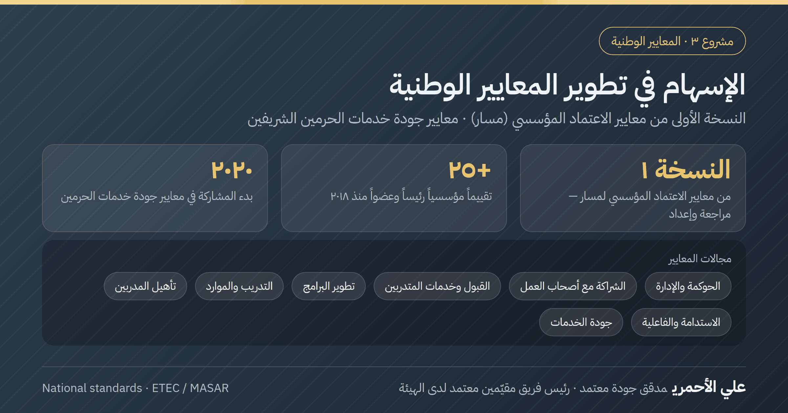

وصف المشروع
المشاركة في التطوير التأسيسي لمعايير الاعتماد المؤسسي للجودة في قطاع التدريب عبر مراجعة وإعداد النسخة الأولى من معايير المركز الوطني لتقويم واعتماد التدريب (هيئة تقويم التعليم والتدريب – مسار)، ثم تطبيقها ميدانياً رئيساً لفرق التقييم وعضواً فيها في أكثر من ٢٥ تقييماً مؤسسياً منذ ٢٠١٨.
إسهام وطني خارج قطاع التدريب: المشاركة (منذ يناير ٢٠٢٠) في إعداد معايير جودة الخدمات للرئاسة العامة لشؤون المسجد الحرام والمسجد النبوي، بنقل منهجية المعايير القابلة للقياس والشواهد إلى بيئة خدمية ذات طابع خاص.
Project description
Contributed to the foundational development of institutional-accreditation quality standards for the training sector by reviewing and preparing the first edition of the standards of the National Center for Training Evaluation and Accreditation (ETEC/MASAR), then applied them in the field as lead evaluator and team member in 25+ institutional evaluations since 2018. Beyond the training sector, since January 2020 I have taken part in preparing service-quality standards for the General Presidency for the Affairs of the Two Holy Mosques, bringing measurable, evidence-based standards into a distinctive service environment.
